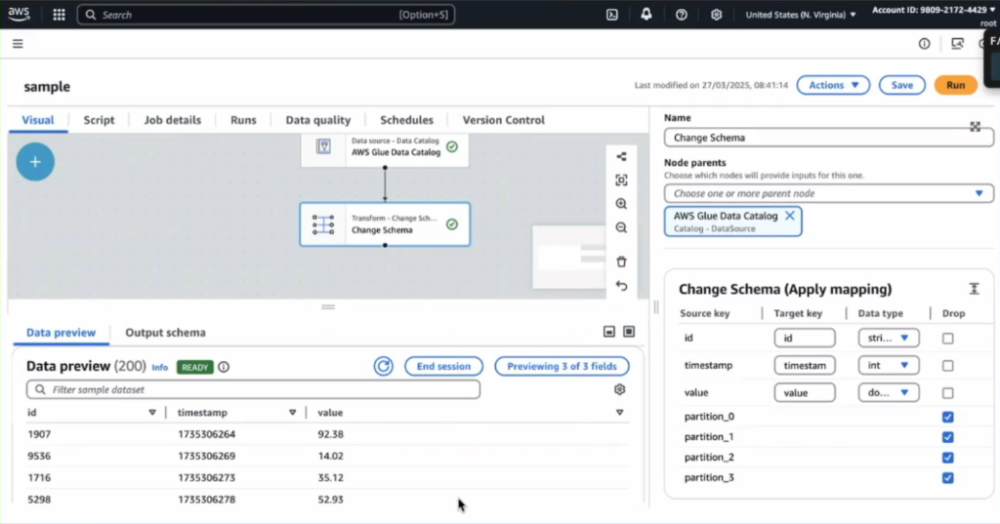
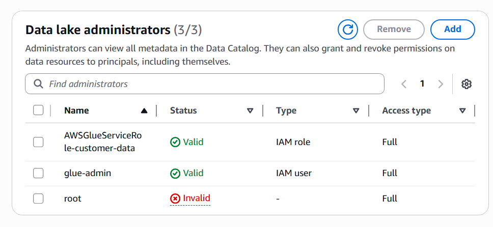
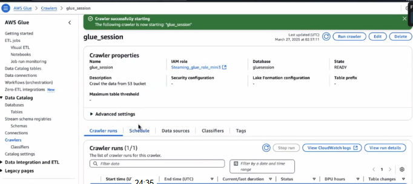
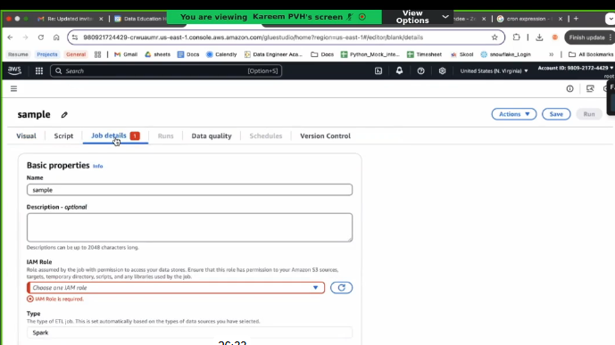
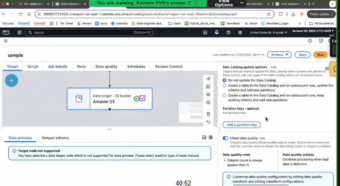
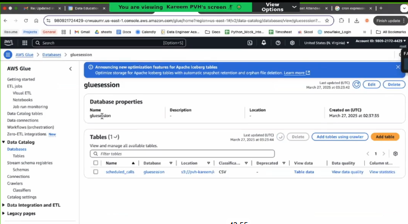

Rob: "Glue is sticky... and confusing. Is it a database? A script?
Think of it as a Public Library. You have potential chaos (pile of books) and you need
order."
📚 The Components
📦
The Book Stacks
S3 (Storage)
The dark basement where piles of files (Books/Scrolls) are thrown. Messy.
🕵️♂️
The Archivist
Glue Crawler
He walks into the basement, opens a box, reads a file, and says 'Aha! This is a
Comma-Separated-Novel with 3 columns!'
🗄️
Card Catalog
Data Catalog
He does NOT store the data. He just writes a card: 'Customer Data is on Shelf 3,
and it has Name, Age, Email.'
✍️
The Translator
Glue Job (ETL)
Reads the book using the Catalog, translates it (e.g., CSV to Parquet), and puts the new clean
book on a new shelf.
👮♂️
The Security Guard
Lake Formation
The Permissions Layer. Just because you found the book (Catalog) doesn't mean
you can read it. LF controls the keys (Column-level access).
👩🏫
The Librarian
Amazon Athena
The Query Engine. You don't need to move the books. She reads the Card Catalog
and fetches the answers (SQL) directly from the stacks (S3).
Automation: "Nobody likes to start work manually every
day."
Triggers = The Alarm Clock.
- Schedule: "Wake up at 8:00 AM" (CRON).
- Event-Based: "Wake up when the file arrives" (S3 Event or Crawler Finish).
✍️ The Translator's Workshop (Script
Editor)
When you create a Glue Job, you choose your tool.
Visual Editor
Analogy: Building with Lego Blocks.
- ✅ Drag & Drop: No coding required.
- ✅ Auto-Code: It writes the python for you in the background.
- ✅ Best for: Simple conversions (CSV -> Parquet).
Script Editor
Analogy: The Typewriter.
- ✅ Total Control: Write raw PySpark or Scala.
- ✅ Advanced: Use for complex logic not supported by visual blocks.
- ✅ Notebooks: Interactive testing (like Jupyter).
💪 Muscle Power (DPUs & Worker Types):
You must pay the Translator!
- Standard/G.1X: The Intern. Cheap, good for small books.
- G.2X: The Bodybuilder. Expensive, needed for massive libraries (TB of
data).
- DPU (Data Processing Unit): How many people are helping him read.
🧐 Anatomy of the Visual Editor
What are we looking at here?

🔪
The Node (Change Schema)
Analogy: The Chopping Board.
You take the raw Ingredient (Source) and modify it.
Use it to: Rename columns (timestamp -> event_time) or
Drop useless ones (partition_0).
👀
Data Preview
Analogy: The Taste Test.
"Did I chop it right?"
It shows you a Sample (200 rows) of what the data looks like after
that specific transformation step.
Why is this cool?
You can inspect your data at every single step of the pipeline without running the whole
job. It's like tasting the soup after adding salt, then again after adding pepper.
Concept Alert: "What if I add new pages to the book?"
Job Bookmark = The Literal Bookmark.
The Translator remembers exactly where he stopped reading last time.
Result: He only translates the NEW pages (Incremental Load), not the whole
book again. Saves time & money!
Lab Time: "Let's hire an Archivist! We will Crawl a file to
see its schema magically appear."
Step 1
The Mess (Upload Data)
Create a file called customers.csv locally:
id,name,email
1,Rob,rob@antics.cloud
2,Sarah,sarah@aws.com
1. Create a folder named raw in your S3 Bucket.
2. Upload the file into it. (Path: s3://my-data-lake-bucket/raw/customers.csv).
Step 2
Hire the Archivist (Create Crawler)
1. Go to
AWS Glue ->
Crawlers.
2. Click
Create Crawler.
3. Name:
customer-scanner.
4. Data Source: Select your S3 folder (
s3://my-data-lake-bucket/raw/).
5. IAM Role: Create verify provided role has
AWSGlueServiceRole.
👮 Security Alert (Lake Formation):
If you use Lake Formation, you MUST explicitly grant this IAM Role permission
to the Database. Otherwise, the Archivist gets kicked out.
🚫 Error: "Account is denied access"?
The Security Guard (Lake Formation) blocked
YOU (the human).
- Step 1: Go to Lake Formation -> Data Lake
Administrators.
- Step 2: Click Add.
- Step 3 (CRITICAL): Search for YOUR username.
Note: If you are Root and it says "Invalid", Lake
Formation has blocked Root. You MUST create a new IAM User (attach
AdministratorAccess policy) and log in as them.
- Step 4: Also add the AWSGlueServiceRole just in case.
- Step 5: Click Save.

Still getting blocked?
Sometimes Admin isn't enough.
1. Go to Lake Formation -> Data Lake Locations -> Verify
your bucket is registered.
2. Go to Databases -> my_library_db ->
Actions -> Grant.
3. Select glue-admin (yourself) -> Check ALL Permissions
(Create Table, etc).
4. Click Grant.
6. Target Database: Click "Add Database" ->
my_library_db.
7. Click
Create.
Step 3
Do the Work (Run Crawler)
The Archivist exists, but he is sleeping. Wake him up.
1. Select customer-scanner.
2. Click Run Crawler.
3. Wait... (Status: Starting -> Running -> Stopping -> Ready).
Step 4
Check the Catalog (Verify)
Did he do his job? Let's check the cards.
1. Go to Data Catalog -> Tables.
2. Click on the new table (likely named raw, customers, or
customer-scanner).
3. Scroll down to Schema.
✅ You should see: id (bigint), name (string), email (string).
Magic! He read the CSV header and figured it out.
Lab Part 2: "Now the file is in the Library. Let's translate it! We will
Drop a Column and save it as Parquet."
Step 5
The Workshop (Create Job)
1. Go to AWS Glue -> ETL Jobs.
2. Select Visual ETL.
3. Source: Select Data Catalog (Node 1).
4. Database: my_library_db | Table: raw.
Step 6
The Chop (Transform)
1. Click + to add a Node -> Transform -> Drop
Fields.
2. Check the box for email (or phone if you have it). We are censoring
it!
3. Click "Data Preview" tab to see it vanish.
Step 7
The New Book (Target & Run)
1. Click + -> Target -> Amazon S3.
2. Format: Parquet.
3. Path: s3://my-bucket/processed/.
4. Job Details tab -> Select your IAM Role.
5. Click Run.
Result: You now have a clean Parquet file in your
'processed' folder!
📸 Visual Breakdown
Let's decode the screens you just saw.
1. The Archivist's Badge (Crawler)

Key Insight: See State: READY? That means he is waiting for
orders.
Database: gluesession -> This is where he will file the cards.
2. The Security Check (IAM Role)

"IAM Role is required"
This is the Badge. The Job (Translator) cannot enter the Library (S3) without it.
Fix: Select a role that has AWSGlueServiceRole permissions.
3. The Destination (S3 Target)

Data Target: This is where the Translator puts the finished book.
Notice Format: JSON/Parquet? You are choosing the language of the new book.
4. The Card Catalog (Database View)

This is NOT a Folder. It is a logic group.
See the table scheduled_calls?
Location: s3://pvh-kareem/...
Proof that the Catalog just points to S3. It doesn't hold the data.